- Overview of the KnowledgeTree plugin
- Requirements
- Installing from Source on a Linux/UNIX server
- KnowledgeTree Plugin Installation
- KnowledgeTree Connection Settings
- User Settings
- Configuring Documents to be Managed by KnowledgeTree
- Integration Example
- Creating Document Types and FieldSet
- Accessing KnowledgeTree inside ProcessMaker
 Plugin Version: 1.4.40 -
Plugin Version: 1.4.40 -
Release Notes | Downloadable Release Notes | Old Versions
- Warning: ProcessMaker deprecated KnowledgeTree plugin and there are no plans for ProcessMaker versions 3.X . It is no longer open source in any meaningful sense. Therefore, KnowledgeTree Community Edition is no longer supported and no longer available from KnowledgeTree Inc.
KnowledgeTree was an open source Document Management System (DMS), which offered a simple web-based interface to provide access to documents for specified users in an organization. ProcessMaker Enterprise Edition offers the Knowledgetree DMS Connector plugin to integrate with KnowledgeTree 3.X, so that Input Documents and Output Documents which are used in ProcessMaker cases can be stored and managed in a centralized manner. Storage in KnowledgeTree allows ProcessMaker documents to be easily accessed by external applications and seamlessly integrated into an organization's wider operations.
Overview of the KnowledgeTree plugin
ProcessMaker Enterprise Edition 2.0 offers a plugin to integrate with KnowledgeTree 3.X. To obtain the plugin, please contact the ProcessMaker sales department. Free trials of the plugin are available.
The ProcessMaker plugin uses web services to connect to KnowledgeTree and automatically login as a KnowledgeTree user. Input and Output Documents which are configured to be managed by KnowledgeTree are automatically stored in KnowledgeTree when created during a case. These documents are place inside of folders whose names can be configured when designing a process.
The ProcessMaker documents can then be accessed inside the KnowledgeTree web interface, but they can also be accessed from the KT DOCUMENTS menu (which is created by the plugin) inside the ProcessMaker interface. All KnowledgeTree folders to which the logged-in user has access are displayed. Click on a folder to see its files and subfolders.
- Remember: All Input and Output Documents which are stored in KnowledgeTree are not saved in ProcessMaker, so if the Knowledge Tree plugin is disabled, all these documents will not be accessible from ProcessMaker.
Requirements
ProcessMaker Requirements
- ProcessMaker v2.5.X (+available hotfix) (2.5.2.4 - 2.5.2.5) and Enterprise Plugin v2.0.17 or higher (+available hotfix)
- or
- ProcessMaker Enterprise Edition v2.8 or later
Browser Compatibility
Tested with the following browsers:
- Mozilla Firefox v. 33.
- Google Chrome v. 38.
- Internet Explorer v. 10.
Installing from Source on a Linux/UNIX server
Follow these instructions to install KnowledgeTree 3.7 from source on a Linux/UNIX server.
KnowledgeTree Server Requirements
- Minimum of 4GB RAM in total or extra 2GB RAM for KnowledgeTree
- PHP 5.2 (PHP 5.3 does not work)
- Red Hat/CentOS: php
- Debian/Ubuntu: php5
- PHP LDAP extension
- Red Hat/CentOS: php-ldap
- Debian/Ubuntu: php5-ldap
- PHP Exif extension
- Red Hat/CentOS: included in php-common
- Debian/Ubuntu: included in php5
- PHP mbstring extension
- Red Hat/CentOS: php-mbstring
- Debian/Ubuntu: included in php5
- PHP mysql extension
- Red Hat/CentOS: php-mysql
- Debian/Ubuntu: php5-mysql
- PHP json extension
- Red Hat/CentOS: included in php-common
- PHP fileinfo extension
- Red Hat/CentOS: php-pecl-Fileinfo
- PHP cURL extension
- Red Hat/CentOS: included in php-common
- Debian/Ubuntu: php5-curl
- PHP tokenizer extension
- Red Hat/CentOS: included in php-common
- MySQL server and client, version 5.0.41 or later
- Red Hat/CentOS: mysql, mysql-server
- Debian/Ubuntu: mysql-client, mysql-server
- Apache 2.0 or later
- Red Hat/CentOS: httpd
- Debian/Ubuntu: apache2
- Red Hat/CentOS: poppler-utils
- Red Hat/CentOS: compile from source
- OpenOffice.org 2.0 or above
- Red Hat/CentOS: openoffice.org-headless
- Red Hat/CentOS: zip
Red Hat/CentOS/Fedora
If using Red Hat 6 or Fedora 12+, then PHP 5.3 will have to be downgraded to PHP 5.2.
Installing required programs
Install the KnowledgeTree requirements (as the root user):
Installing pstotext
Since a package is not available for pstotext program, it will need to be compiled from source. First, install gcc (if it isn't already installed):
Download the pstotext source code:
Then, decompress and compile the code:
cd pstotext-1.9
make
Finally, copy the executable to the /bin directory:
Installing KnowledgeTree
Download the source code file for KnowledgeTree, which will have a filename like kt-src-oss-3.7.0.2.tgz. The Community Edition can be found in this page. Install it in a location such as /var/www where it can be accessed by the Apache web server.
KnowledgeTree Plugin Installation
After installing the Enterprise Edition, login to ProcessMaker with a user such as "admin" who has the PM_SETUPADVANCE permission in his/her role. Go to ADMIN > Plugins > Enterprise Edition and install the Knowledgetree DMS Connector plugin. It can be installed by either clicking on Install from File and uploading the plugin file or by clicking on its Install Now button in the list of available plugins.
After installing the plugin, make sure that it is enabled.
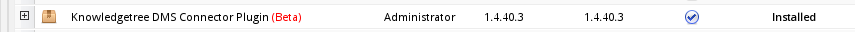
Once the KnowledgeTree DMS Connector plugin is enabled, a new KT Documents menu will appear in the top menu bar and a DMS Setup option will be added in the ADMIN > Plugins sidebar.
KnowledgeTree Connection Settings
Go to ADMIN > Plugins > DMS Setup to configure how to connect to a KnowledgeTree Server.
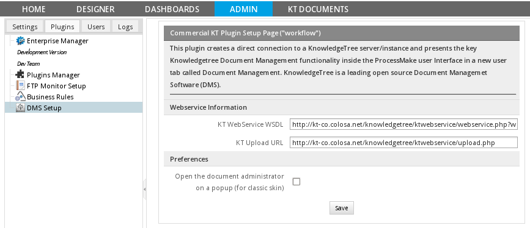
In the configuration dialog box, enter the connection information to access a KnowledgeTree server:
- KT WebService WSDL: Enter the URL to connect to the web services for a KnowledgeTree server, which by default is:
- http://ip-address/knowledgetree/ktwebservice/index.php?wsdl
- KT Upload URL: Enter the URL where documents from ProcessMaker will be uploaded to the KnowledgeTree server, which by default is:
- http://ip-address/knowledgetree/ktwebservice/upload.php
- Note: The URL to access KnowledgeTree web services can be configured by logging into KnowledgeTree as the "admin" user and going to Administration > System Configuration > Client Tools Settings > Web Services > Download Url.
After entering the connection settings, click on Save.
User Settings
In order to access KnowledgeTree, each ProcessMaker user will need to manually enter his/her username and password to remotely login to KnowledgeTree.
To set the KnowledgeTree login credentials for a user, login to ProcessMaker as that user and go to the KT DOCUMENTS menu and click on the DMS User Configuration submenu.
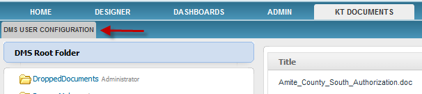
A dialog box will appear to enter the name of the KnowledgeTree user and his/her password which will be used to remotely login to KnowledgeTree.
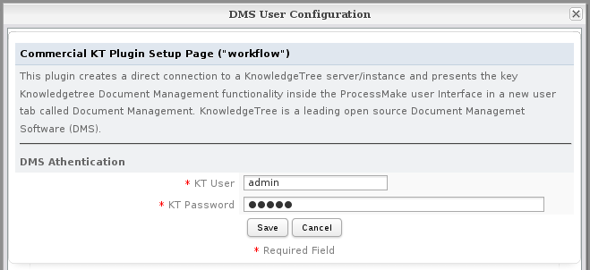
Enter the username and his/her password. Then, click on Save. (If unsure which users are available, login to KnowledgeTree and go to Settings > User Setup > Manage Users.)
If a user has not set his/her login credentials for KnowledgeTree, then the first time that he/she runs a case which needs to save an Input or Output Document to KnowledgeTree, then the above dialog box will appear, prompting the user to enter his/her login credentials.
If the login credentials aren't set for a user or are incorrect, then the following error message will appear when clicking on the KT DOCUMENTS menu:
Configuring KnowledgeTree
By default, all documents managed by KnowledgeTree are placed in the "Default" category of Document Type. To create other categories of Document Types, login to KnowledgeTree as the "admin" user and go to Admin.
Configuring Documents to be Managed by KnowledgeTree
Login to ProcessMaker as the "admin" user (or another user with the PM_FACTORY permission in his/her role) and open a process for editing. On the second menu-option, next to Case Scheduler option, DMS configuration option will be enable as the image below:
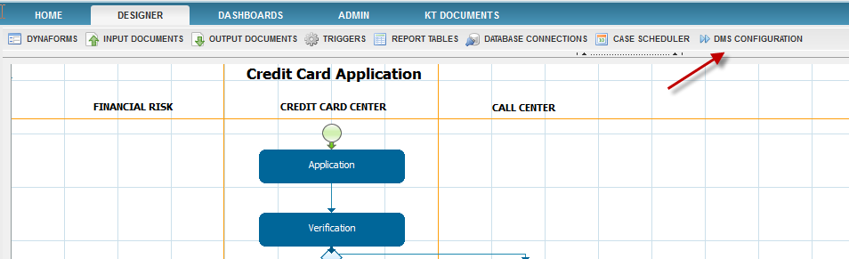
Click on the option and the a list of Document Types will be display.

- Note: Document Types are defined in KnowledgeTree using the KnowledgeTree interface.
If there's no Document Types defined, the only one appearing on the list will be Default so choose Assigned Documents from Default option, the following list of options will display on the same window:

Assigning Documents
To save documents in KnowledgeTree, it is required to assign which ones of the process will be saved, they will be either Input Documents or Output Documents. By clicking on Assign Documents the list of Output and Input Documents created during the process will be listed.
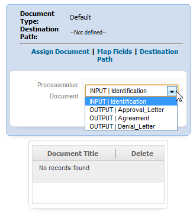
Assign the Input and Output Documents that will be saved in KnowledgeTree. All assigned documents will be displayed below the list of documents:
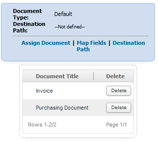
Map Types
Map Fields between DMS Metadata and ProcessMaker variables are created to map case variables to KnowledgeTree, in other words it's possible to specify which variables will be used in knowledge tree to display specific information of an uploaded document depending on the case variables chosen.
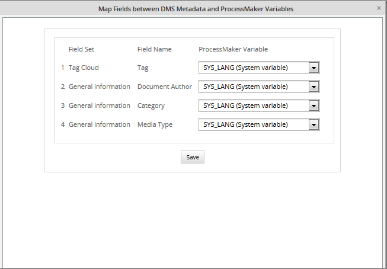
It is divided into:
- Field Set: Name of the section where information selected in the dropdown will be displayed
- Field Name: name of the field inside the section.
- ProcessMaker variable: dropdown with the list of case variables either process and system variables.
This information will be placed on the general information of the document uploaded inside Knowledge Tree where:
- Document Author: choose the name of the author or owner of the document.
- Category: Category of the document, for example, Finance if the document is related with some expenses.
- Media Type: it will be also consider as content type which is a general category of data content, such as: application (executable program), audio content, an image, a text message, a video stream, and so forth.
Note:If a map type is created on Knowledge Tree it will be displayed on this list.
Destination Path
To have documents stored in folders it's necessary to specify the path where documents will be placed, it is possible to give a new path, just specifying the name of the folders, by clicking on the "Case Variable" button it is also possible to add case variables (either system or process) as folders names.
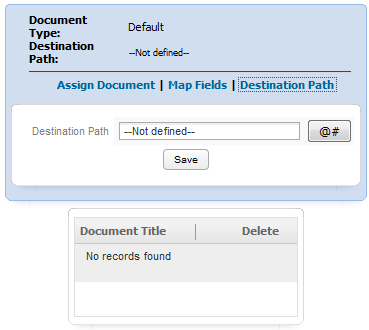
For example, if a user wants to stored documents in a folder named ProcessMaker and on a subfolder with the user name, the path will be:
Note: Don't forget to use / (Slash) as a punctuation mark in order to create folders correctly.
Adding a path, it will display on destination path option:

Integration Example
To understand how the integration works, it is a good practice to create an example. Use the Credit Card Application process which can be downloaded from the ProcessMaker Library.
Follow the steps below to see how the integration works with ProcessMaker:
1. Open The Credit Card Application and go to DMS Configuration in the menu below the DESIGNER :
2. Click on Assigned Documents, which is the default for Document Types.
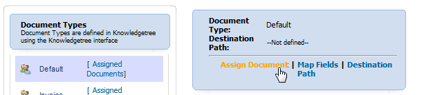
3. Click on Assigned Documents to assign either an Input or Output Documents to be stored on the Knowledge Tree. In the dropdown select the Identification Input Document and click on assign to add the Input Document to the list below:
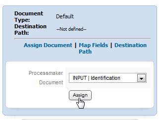
At this point Document Type is defined in the default type and Destination path as --not defined-- because no path has been defined for storing the documents.
4. Click on Destination path to specify a path where the document will be stored.

Define the path where the Input Document will be stored inside KnowledgeTree:

Once the path is defined, click on Save and the complete path will display at the top of the KnowledgeTree configuration screen:

If more documents are required to be assigned repeat steps 3 and 4
- Note: Each assigned document must have its own destination path and Map Fields.
5. Once the DMS configuration is set, close the window and start a case. Attach a Document in the Input Document Window and once it is uploaded, this message will be displayed: Info: /ProcessMaker/admin/Knowledge Tree Manual.docx was successfully saved in Knowledgetree will display:

A file which is stored in KnowledgeTree will have a Get button to download it, whereas a file stored normally in ProcessMaker will have a Download button.
6. Log in to KnowledgeTree with the user used in the DMS Settings Configuration in ProcessMaker.

7. Go to Browse Documents and look for the name of the folder defined in Destination Path. In this example, the name of the folder is processmaker and its subfolder is the username, which in this case is "admin":
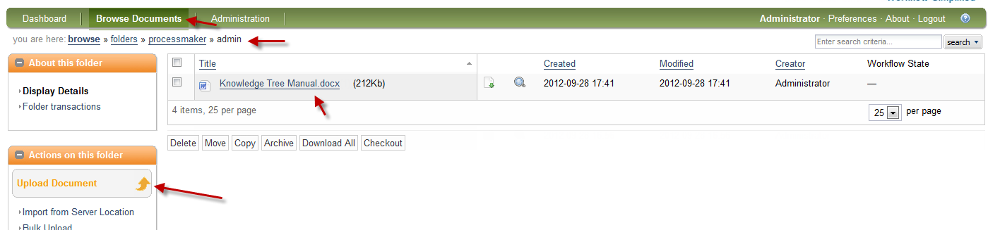
The document can be downloaded directly from KnowledgeTree and it displays generic and general information about the file. Remember that this information was set in map types
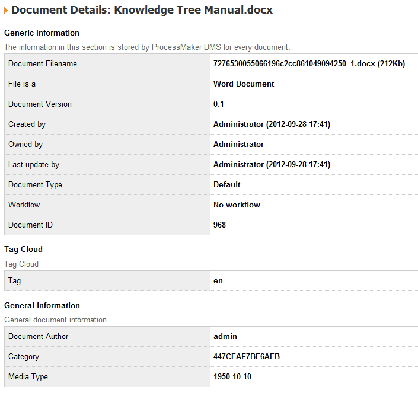
Creating Document Types and FieldSet
Adding metadata about documents creates a high-level storage structure for both KnowledgeTree and ProcessMaker. This helps to organize documents uploaded to ProcessMaker according to the document type. For example, a document type named Invoice can be created, which stores all documents related to invoices generated during the process.
Configuring the metadata layer involves adding the document types, fieldsets and fields, so that ProcessMaker variables can be displayed next to each fieldset.
Creating Document Fieldsets
Login to KnowledgeTree and go to Administration > Document Metadata and Workflow Configuration > Document Field Management. The Existing document fieldsets will be listed:
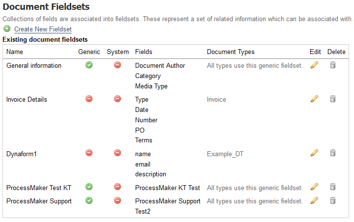
Click on Create New Fieldset, and fill in the following fields:
- Fieldset Name: Required field. Enter a unique name to identify the fieldset.
- Description: Required field. Add a description about the fieldset, which will help the user know what information to enter in this field.
- Generic: A generic fieldset is one that applies to every document by default. These fieldsets will be available for users to edit and add for every document in KnowledgeTree.
The final view will be:
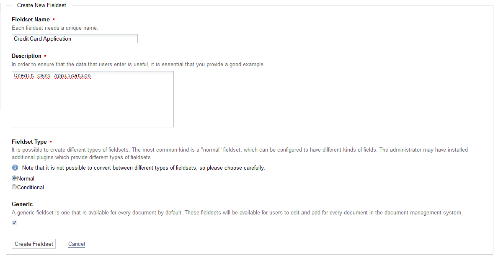
Adding New Fields
Once the Fieldset is created, new fields can be added. These fields will display information related to the process created in ProcessMaker, so it's important to give clear names which will be associated with case variables.
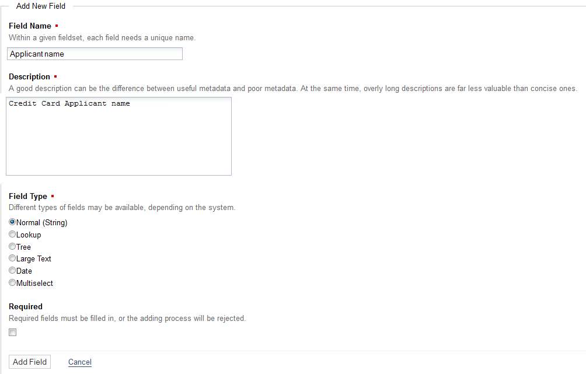
- Field Name: Name of the field which will be associated with a ProcessMaker variable.
- Description: A clear description about the field.
- Field Type: It is possible to define different types of fields.
- Required: If this option is selected, the file will be required and must be uploaded.
In this example, two fields will be created, named Application Date and Place of Employment. The two fields will be associated with ProcessMaker variables, so it is recommended to use field names which can be easily associated with ProcessMaker variables.
Managing Document Types on ProcessMaker
Once Fieldsets and Fields were created, go back to Processmaker and open the DMS Configuration at the end of the Document Types Credit Card Application type will be created:
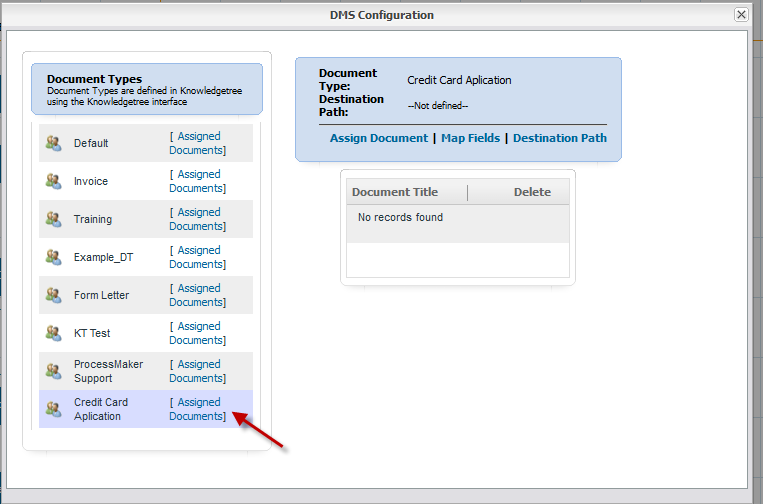
Click on Assigned Documents and assign two documents, in the case of the example the Input Document Identification and the Output Document Approve Letter:
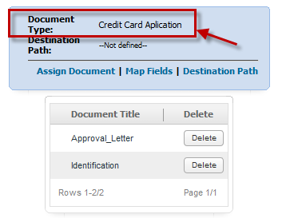
- Note: Remember to check in the DMS Configuration window if the Document Type is the correct one created in KnowledgeTree, which in this example is Credit Card Application.
Then define a path where document will be stored inside KnowledgeTree:

Defining Map Fields where ProcessMaker variables will be used to show some specific information about the document(s) stored in KnowledgeTree. In this example, tree types of the Field Set named Credit Card Application are displayed at the bottom of the list:
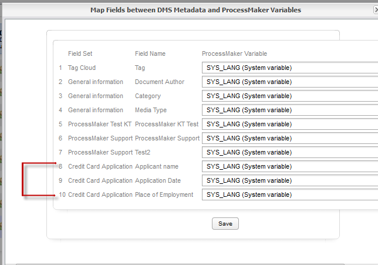
Field names will be created once the Fieldset is created. In this example: Applicant Name, Application Date and Place of Employment.
Dropdowns will list the ProcessMaker system and case variables. Assign a variable from the process to fieldset:

Checking the Generic Information: Once a case is running and a document is attached (Input Document) or generated (Output Document), open KnowledgeTree and go to destination path for the document to see its Generic Information:
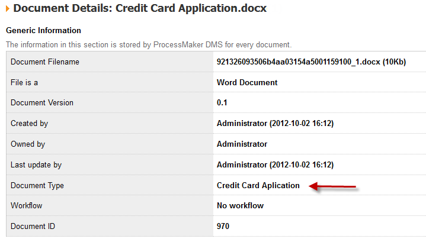
The Document Type in this example is Credit Card Application. It is important to create Document Types to manage large amounts of documents, which will be uploaded or generated in ProcessMaker and stored in KnowledgeTree.
Checking the General Information: In this case a Field Set named Credit Card Application was created, so information created as field names will be displayed in the General Information section:
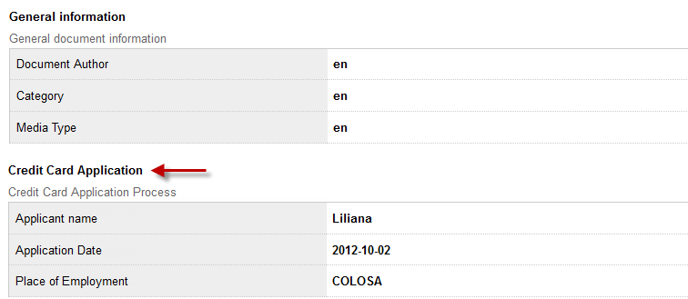
The General Information contains the case variables which were created when the case was executed.
Accessing KnowledgeTree inside ProcessMaker
The Input Documents and Output Documents which are configured to be managed by KnowledgeTree will now appear in folders. ProcessMaker cases will now be integrated into KnowledgeTree's document management system. These documents can be accessed inside ProcessMaker by going to the KT DOCUMENTS menu and clicking on the directory or subdirectory where the document is stored.
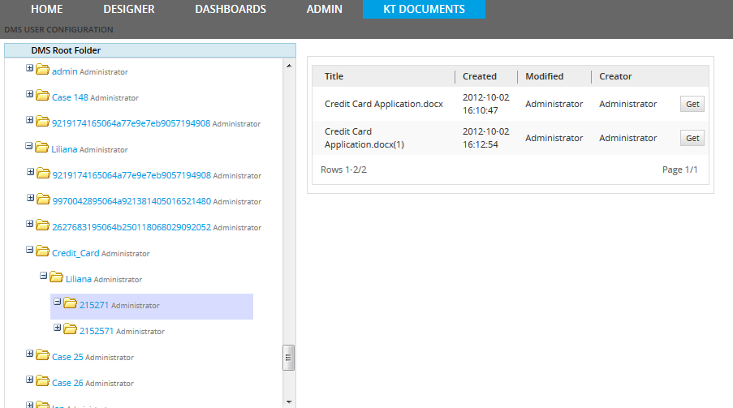
To navigate between folders click on + to expand each folder in the tree and - to collapse it.
To download or view one of the documents, click on its Get button. Depending upon how the web browser is configured, the document may be displayed in a browser plugin or a stand-alone application. Alternatively, it may be downloaded and stored on the local computer.